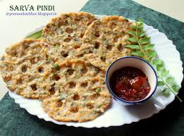
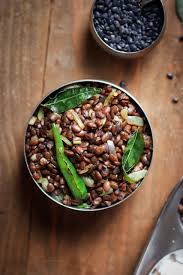
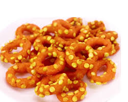
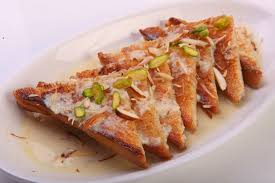

Hyderabadi Biryani
A world-famous aromatic biryani made with basmati rice, saffron, and meat.

Sarva Pindi
A crispy, savory rice flour pancake mixed with spices and peanuts.

Gudalu
A crunchy, spiced snack made from roasted chickpeas and peanuts.

Chegodilu
A popular ring-shaped crispy snack made from rice flour and sesame seeds.

Double Ka Meetha
A traditional Hyderabadi dessert made with fried bread soaked in sugar syrup and milk.